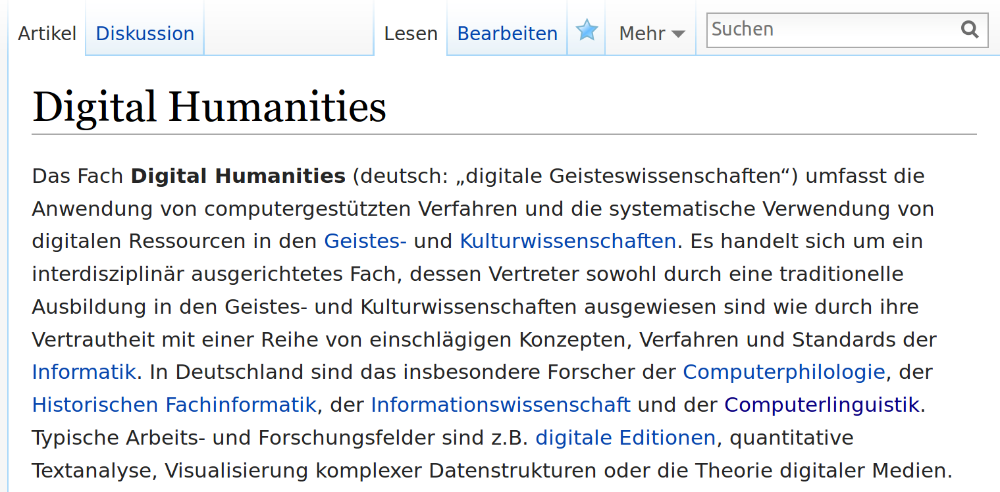
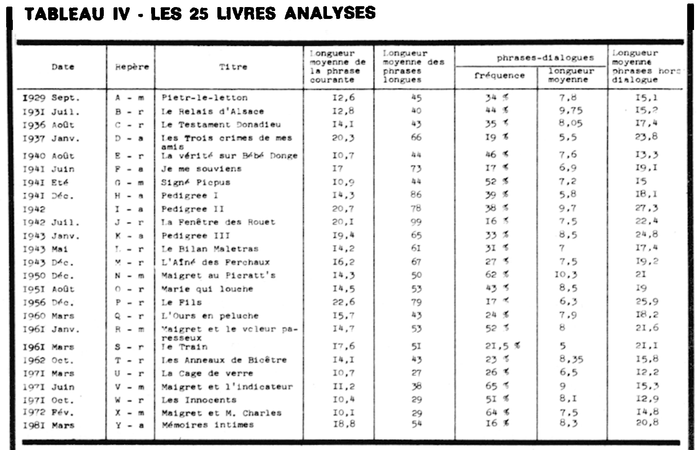
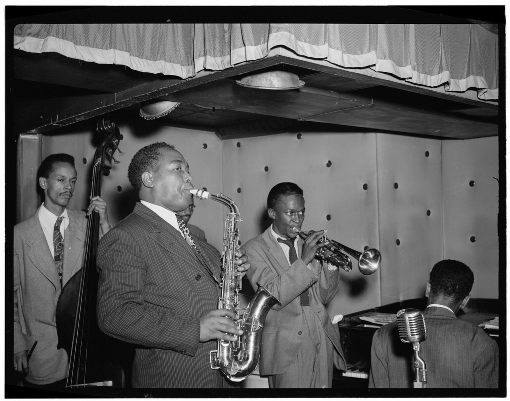
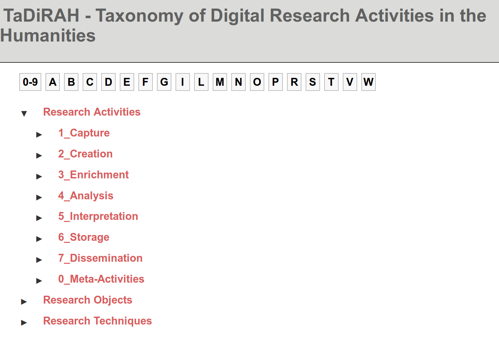
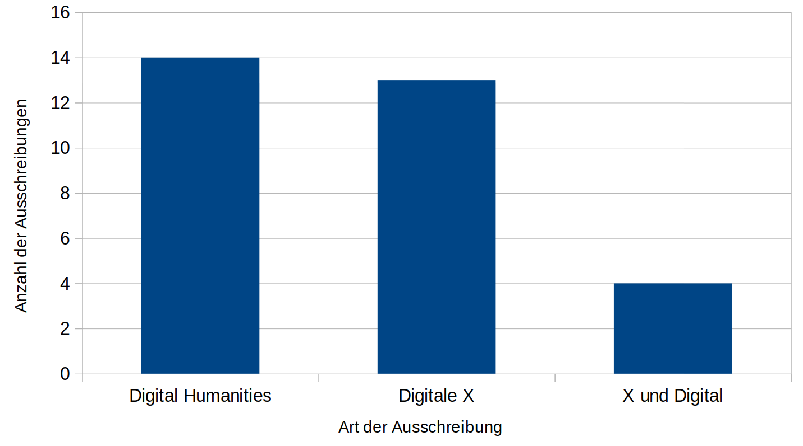

<!doctype html>
<html lang="en">
<head>
<meta charset="utf-8">
<!-- CUSTOMIZE THIS! -->
<title>Digital Humanities</title>
<meta name="author" content="Christof Schöch">
<!-- END -->
<meta name="description" content="Slides">
<meta name="apple-mobile-web-app-capable" content="yes">
<meta name="apple-mobile-web-app-status-bar-style" content="black-translucent">
<meta name="viewport" content="width=device-width, initial-scale=1.0, maximum-scale=1.0, user-scalable=no, minimal-ui">
<link rel="stylesheet" href="css/reveal.css">
<link rel="stylesheet" href="css/theme/simple.css" id="theme">
<!-- Code syntax highlighting -->
<link rel="stylesheet" href="lib/css/zenburn.css">
<!-- Printing and PDF exports -->
<script>
var link = document.createElement( 'link' );
link.rel = 'stylesheet';
link.type = 'text/css';
link.href = window.location.search.match( /print-pdf/gi ) ? 'css/print/pdf.css' : 'css/print/paper.css';
document.getElementsByTagName( 'head' )[0].appendChild( link );
</script>
<!--[if lt IE 9]>
<script src="lib/js/html5shiv.js"></script>
<![endif]-->
</head>

<body>
<div class="reveal">
<div class="slides">
<section data-markdown="" data-separator="^\n--\n" data-separator-vertical="^\n---\n" data-charset="utf-8" data-background-image="img/basics/uni-trier-mini.png" data-background-size="50px" data-background-position="top right">
<script type="text/template">

## Einführung:<br/>Was sind die Digital Humanities?
<hr/>
<br/>
<br/>Vorlesung *Einführung in die Digital Humanities*
<br/>MSc Digital Humanities | Wintersemester 2019/20
<br/>
<br/>Prof. Dr. Christof Schöch
<br/>
<br/>
<hr/>
<br/>


--
# Einstieg

---
## Ankündigungen
<br/>
* Vortragsreihe "Praxis der Digital Humanities" (Do, 16-18 Uhr, Raum DM 31)<br/>Programm: https://www.uni-trier.de/index.php?id=68033
* Erster Termin: Peter Hinkelmanns und Manuel Schwembacher (Universität Salzburg, Österreich):
"ONAMA. Ein Linked-Open-Data-Projekt zur Untersuchung von Narrativen des Mittelalters in Bildern und Texten"


---
## Infrastruktur
<br/>
* Seite "Studium" unter http://dh.uni-trier.de
* Telegram-Chat DH
* Mailingliste CL/DH
* Porta und StudIP
* Bibliothek: Bereich 82


---
## Organisatorisches
<br/>
* Veranstaltung = Vorlesung (Di 14-16) + Übung (Fr. 13-15)
* Regelungen zur Anwesenheitspflicht beachten
* Leistungsnachweis: Klausur am 11.2.2020
* Sprechstunde: Di, 13-14 Uhr<br/>(nur nach Anmeldung über <a href="https://studip.uni-trier.de/dispatch.php/profile?cid=af77db0c81c2486bc8edf190b3c9bdaa&username=schoech">StudIP</a>)
* Literatur: https://www.zotero.org/groups/2162827/dh_trier/items/collectionKey/25SQHT36
* Folien: https://dh-trier.github.io/vorlesung


---
## Semesterüberblick

<small>

* **29.10.: Digital Humanities im Überblick**
* 05.11.: Digitalisierung: Text und Bild
* 12.11.: Grundbegriffe des Programmierens
* 19.11.: Datenmodellierung 1: Modellierung
* 26.11.: Datenmodellierung 2: Datenbanken
* 03.12.: Datenmodellierung 3: Text, Markup, XML
* 10.12.: Digitale Edition
* 17.12.: Geschichte der Digital Humanities
* 21.12.-5.1.: *Weihnachtspause*
* 07.01.: Informationsvisualisierung
* 14.01.: Natural Language Processing
* 21.01.: Quantitative Analyse 1: Stilometrie, Topic Modeling
* 28.01.: Quantitative Analyse 2: Superv. Machine Learning
* 04.02.: Open Humanities
* 11.02.: Klausurtermin

</small>

---
## Sitzungsüberblick
<br/>
1. Was sind die Digital Humanities?
2. Binnendifferenzierungen der DH
3. Aktuelle disziplinäre Entwicklungen
4. Fazit: Agenda der DH


--
# 1. Was sind die Digital Humanities?

---
## 817 Definitionen
<br/>
<br/>
<br/>
# <a href="http://whatisdigitalhumanities.com/">whatisdigitalhumanities.com</a>
<br/>
<br/>


---
## *Doing Digital Humanities* Bibliografie
<br/>
<br/>
https://www.zotero.org/groups/113737/doing_digital_humanities_-_a_dariah_bibliography/items


---
## Definition bei Wikipedia
<p></img></p>


---
## Nochmal, was sind die DH?
<br/>
* Ein Set von Arbeitstechniken / Werkzeugen? <!-- .element: class="fragment" data-fragment-index="1" -->
* Ein Set von Methoden? <!-- .element: class="fragment" data-fragment-index="2" -->
* Eine Disziplin? <!-- .element: class="fragment" data-fragment-index="3" -->
* Eine Community? <!-- .element: class="fragment" data-fragment-index="4" -->
* ... <!-- .element: class="fragment" data-fragment-index="5" -->

---
## Arbeitstechniken / Werkzeuge
<br/>
* die gleichen Fragen, Methoden und Ziele wie GW <!-- .element: class="fragment" data-fragment-index="1" -->
* aber schneller und effizienter durch technische Unterstützung <!-- .element: class="fragment" data-fragment-index="2" -->
* = Minimalanspruch <!-- .element: class="fragment" data-fragment-index="3" -->

---
## Methoden
<br/>
* Mit neuen Techniken ändern sich die Methoden! <!-- .element: class="fragment" data-fragment-index="1" -->
* Mit neuen Methoden ändern sich Fragen & Antworten <!-- .element: class="fragment" data-fragment-index="2" -->
* Beispiel: Operationalisierung / Modellierung <!-- .element: class="fragment" data-fragment-index="3" -->
* Beispiel: "wiederholende Forschung" (Simenon) <!-- .element: class="fragment" data-fragment-index="4" -->

---
## Satzlänge bei Simenon
</img>
<br>(Quelle: Richeaudeau 1982, siehe [Referenzen](#/5/3))

---
## Satzlänge bei Simenon
<a href="img/E01/sentlen-romans_101+500.svg"></img></a>
<br/>
(Quelle: Schöch 2017, siehe [Referenzen](#/5/3))

---
## Disziplin / Community:<br/> Institutionalisierung
<br/>
* Verbände: DHd, fachbezogene AGs, EADH, ADHO (mit SIGs), TEI, ESTS <!-- .element: class="fragment" data-fragment-index="1" -->
* Jahrestagungen: DHd-Tagung; DHBenelux; AIUCD; HDH; DHN, DH Conference, uvm. <!-- .element: class="fragment" data-fragment-index="2" -->
* Zeitschriften: DSH, DHQ, ZfdG, Digital Studies / Le champ numérique, Cultural Analytics, Umanistica digitale, Humanités numériques, uvm. <!-- .element: class="fragment" data-fragment-index="3" -->
* Studiengänge und Professuren: siehe DH Course Registry <!-- .element: class="fragment" data-fragment-index="4" -->
https://registries.clarin-dariah.eu/courses/ <!-- .element: class="fragment" data-fragment-index="5" -->

---
## Interdisziplinarität?<br/>DH als ein Jazz Ensemble
<br/>
<a href="img/E01/jazz.jpg"></img></a>
<br/>
(Quelle: LoC, siehe [Referenzen](#/5/3))


--
# 2. Binnendifferenzierungen der DH

---
## Nach Gegenständen
<br/>
* Text (Manuskripte, Drucke, Blogs) <!-- .element: class="fragment" data-fragment-index="1" -->
* Bild (Gemälde, Karten, etc.) <!-- .element: class="fragment" data-fragment-index="2" -->
* Musik/Ton (Noten vs. Audio) <!-- .element: class="fragment" data-fragment-index="3" -->
* Film/Video (Dokumentationen, Spielfilme, etc.) <!-- .element: class="fragment" data-fragment-index="4" -->
* Spiele (physikalische Spiele, Videospiele) <!-- .element: class="fragment" data-fragment-index="5" -->
* Artefakte (Objekte, Kunstwerke, Gebäude) <!-- .element: class="fragment" data-fragment-index="6" -->
<br/><br/>
* Jeweils: Metadaten / Retrodigitalisat / born digital <!-- .element: class="fragment" data-fragment-index="7" -->


---
## Arbeitsbereiche nach Disziplinen
<br/>
* Digitale Editionswissenschaften <!-- .element: class="fragment" data-fragment-index="1" -->
* Digitale Geschichtswissenschaften <!-- .element: class="fragment" data-fragment-index="2" -->
* Computerphilologie <!-- .element: class="fragment" data-fragment-index="3" -->
* Digitale Kunstgeschichte <!-- .element: class="fragment" data-fragment-index="4" -->
* Digitale Musikwissenschaften <!-- .element: class="fragment" data-fragment-index="5" -->
* Digitale Archäologie <!-- .element: class="fragment" data-fragment-index="6" -->
* Computerlinguistik <!-- .element: class="fragment" data-fragment-index="7" -->
* Angewandte Informatik <!-- .element: class="fragment" data-fragment-index="8" -->
* ... <!-- .element: class="fragment" data-fragment-index="9" -->

---
## Arbeitsbereiche nach Methoden
<a href="http://tadirah.dariah.eu/vocab/"></img></a>
<br/>http://tadirah.dariah.eu/vocab/

---
## Arbeitsbereiche (TaDiRAH)
<p><a href="http://tadirah.dariah.eu/vocab/"></img></a></p>
http://tadirah.dariah.eu/vocab/

---
## Sphärenmodell
<p><a href="img/E01/sahle-sphären.png"></img></a></p>
<p>(Patrick Sahle, 2013, siehe [Referenzen](#/5/3))</p>


--
# 3. Aktuelle disziplinäre Entwicklungen

---
## Disziplinäre Entwicklungen
<br/>
1. Institutionalisierung <=> Mainstreaming
2. Konsolidierung <=> Ausdifferenzierung

---
## Beispiel: Lerngelegenheiten
<br/>
* Studiengänge an mindestens 15 Standorten in D (siehe: DH Course Registry) <!-- .element: class="fragment" data-fragment-index="1" -->
* Nutzerfreundliche(re) Software: Voyant, CATMA, TXM, stylo, Gephi, oXygen (und: DiRT) ... <!-- .element: class="fragment" data-fragment-index="2" -->
* Lehrbuch Digital Humanities: eine Einführung (Jannidis/Kohle/Rehbein) <!-- .element: class="fragment" data-fragment-index="3" -->
<br/><br/>
* Links:  <!-- .element: class="fragment" data-fragment-index="4" -->
    * https://registries.clarin-dariah.eu/courses/
    * DiRT: https://dirtdirectory.org/


---
## Beispiel: Verbände
<br/>
* Deutschland <!-- .element: class="fragment" data-fragment-index="1" -->
    * Fachverband (DHd) und Jahrestagung
    * Fachbezogene AGs (Amerikanistik, Germanistik, Geschichte, Kunstgeschichte, Romanistik, etc.)
* International <!-- .element: class="fragment" data-fragment-index=""" -->
    * ADHO (und nationale Verbände)
    * Digitale Edition: TEI, ESTS
    * Allgemein: ADHO-SIGs; FoSL    


---
## Beispiel: Professuren (2011-2017)
<p><a href="img/E01/dh-und-dx.png"></img></a></p>
<p>(Datengrundlage: [Sahle 2014](http://dhd-blog.org/?p=6174))</p>


---
## Konsequenz: Kern-DH vs. Digitale X
<br/>
* Jeweils eigene Forschungsagenda <!-- .element: class="fragment" data-fragment-index="1" --> 
* Prognose: Eigene Konferenzen (bspw. Stilometrie, dliNA) <!-- .element: class="fragment" data-fragment-index="2" --> 
* Themen wie Open Science als eigene Spezialisierung <!-- .element: class="fragment" data-fragment-index="3" --> 


---
## Kern-DH: Themen
<br/>
* Historiographie der DH <!-- .element: class="fragment" data-fragment-index="1" --> 
* Epistemologie digitaler Methoden <!-- .element: class="fragment" data-fragment-index="2" --> 
* Was sind Daten, was ist Modellierung, in den DH?  <!-- .element: class="fragment" data-fragment-index="3" --> 
* Mechanismen des Methodenimports <!-- .element: class="fragment" data-fragment-index="4" --> 
* Wie können die diversen Digitalen X zusammenwirken?  <!-- .element: class="fragment" data-fragment-index="5" --> 


--
# 4. Fazit: Agenda der DH

---
## Agenda-Items
<br/>
* State-of-the art der Informatik aufnehmen und anpassen <!-- .element: class="fragment" data-fragment-index="1" -->
* Mainstreaming institutionell besser unterstützen <!-- .element: class="fragment" data-fragment-index="2" -->
* Bewusstsein schaffen für Kern-DH vs. Digitale X <!-- .element: class="fragment" data-fragment-index="3" -->
* Behandlung von Kern-DH Themen fördern <!-- .element: class="fragment" data-fragment-index="4" -->


---
## Lektürehinweise

<small>

* Manfred Thaller, "Digital Humanities als Wissenschaft", in: _Digital Humanities: Eine Einführung_, hg. von Fotis Jannidis, Hubertus Kohle und Malte Rehbein. Stuttgart: Metzler, 2017, S. 13-18.

*Weitere Empfehlungen*
* Matthew G. Kirschenbaum, "What Is Digital Humanities and What’s It Doing in English Departments?", _ADE Bulletin_ 150, 2010. http://mkirschenbaum.files.wordpress.com/2011/01/kirschenbaum_ade150.pdf
* Patrick Sahle, "DH Studieren! Auf dem Weg zu einem Kern- und Referenzcurriculum der Digital Humanities". _DARIAH-DE Working Papers_ Nr. 1. Göttingen: DARIAH-DE, 2013. URN: urn:nbn:de:gbv:7-dariah-2013-1-5
* Patrik Svensson, "The Landscape of Digital Humanities", _Digital Humanities Quarterly_ 4.1, 2010, http://digitalhumanities.org/dhq/vol/4/1/000080/000080.html.

*Darüber hinaus* 
* _Doing Digital Humanities Bibliography_, hg. von DARIAH-DE. Göttingen: DARIAH-DE, 2014-2017. https://www.zotero.org/groups/113737/doing_digital_humanities_-_a_dariah_bibliography/items ("Introductions to DH")
* European Association for Digital Humanities, Project Registry: http://eadh.org/projects

</small>

---
## Bildquellen

<small>
* Heuser, Ryan (2016). "From Fields to Vectors", *Virtue and the Virtual. Eighteenth-century literature and computational criticism*, http://ryanheuser.org/word-vectors-3/ (no licence)
* Richeaudeau, François (1982): „Simenon: une écriture pas si simple qu'on le penserait“, in: *Communication et langages* 53: 11 – 32 10.3406/ colan.1982.1484, 23. http://www.persee.fr/doc/colan_0336-1500_1982_num_53_1_1484 (C)
* Sahle, Patrick (2013): „DH studieren! Auf dem Weg zu einem Kern- und Referenzcurriulum der Digital Humanities“, in: *DARIAH-DE Working Papers 1*, Göttingen: DARIAH-DE, 6. http://nbn-resolving.de/urn:nbn:de:gbv:7-dariah-2013-1-5 (CC-BY)
* Schöch, Christof (2017). "Wiederholende Forschung in den digitalen Geisteswissenschaften", *DHd-Tagung 2017: Digitale Nachhaltigkeit*,
Bern, 13.-18. Februar 2017. https://christofs.github.io/wiederholende-forschung-dhd/#/ (CC-BY)
* Library of Congress, William P. Gottlieb collection: "Portrait of Charlie Parker, Tommy Potter, Miles Davis, Duke Jordan, and Max Roach, Three Deuces, New York, N.Y., ca. Aug. 1947" https://loc.gov/item/gottlieb.06851

</small>

--
<br/>
##Vielen Dank! 
<br/>
<br/>
<br/>
<br/>
<br/>
<p>Christof Schöch, 2019</p>
<p>http://www.christof-schoech.de</p>
<hr/>
<p>Lizenz: [Creative Commons Attribution 4.0](https://creativecommons.org/licenses/by/4.0/)</p>

</script>


<!-- DON'T TOUCH UNLESS YOU KNOW WHAT YOU'RE DOING :-) -->
</div>
<script src="lib/js/head.min.js"></script>
<script src="js/reveal.js"></script>
<script>
// Full list of configuration options available at:
// https://github.com/hakimel/reveal.js#configuration
Reveal.initialize({
    controls: true,
    progress: true,
    history: true,
    center: true,
    transition: 'slide', // none/fade/slide/convex/concave/zoom
    // Optional reveal.js plugins
    dependencies: [
        { src: 'lib/js/classList.js', condition: function() { return !document.body.classList; } },
        { src: 'plugin/markdown/marked.js', condition: function() { return !!document.querySelector( '[data-markdown]' ); } },
        { src: 'plugin/markdown/markdown.js', condition: function() { return !!document.querySelector( '[data-markdown]' ); } },
        { src: 'plugin/highlight/highlight.js', async: true, callback: function() { hljs.initHighlightingOnLoad(); } },
        { src: 'plugin/zoom-js/zoom.js', async: true },
        { src: 'plugin/notes/notes.js', async: true }
        ]
    });
</script>
</body>
</html>
